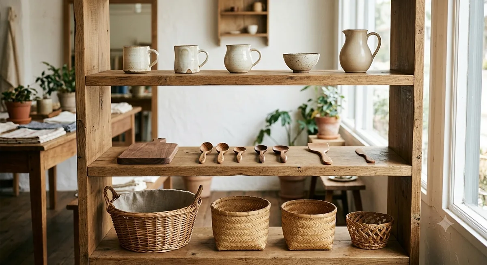
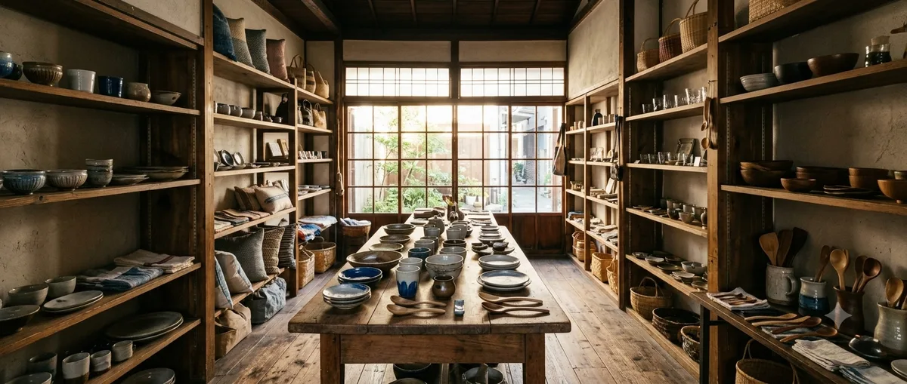

暮らしの道具
手仕事雑貨店 つむぎ
つくり手の顔が見える、暮らしの道具を。
こだわり
全国の工房をたずねて、つくり手と話し、実際に使ってみたものだけを置いています。
こだわりをもっと見る →Instagram
Instagramの投稿がここに自動表示されます（デモ表示中）





詳しく見る
つくり手の顔が見える、暮らしの道具を。
全国の工房をたずねて、つくり手と話し、実際に使ってみたものだけを置いています。
こだわりをもっと見る →




全国の工房をたずねて、つくり手と話し、実際に使ってみたものだけを置いています。派手さはなくても、毎日の手にしっくりくるものを。
陶器、木の道具、手織りの布、ガラス、かご。素材も産地もばらばらですが、選ぶ基準はひとつ。「長く使えるか」だけです。
欠けたら直す、へたったら手入れする。売って終わりではなく、道具として使い続けていただくところまでがお店の仕事だと思っています。